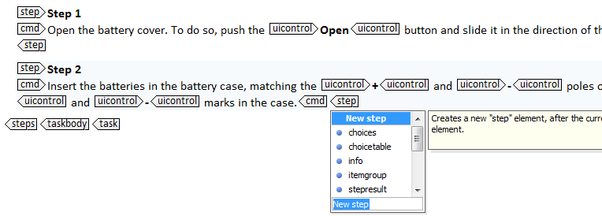
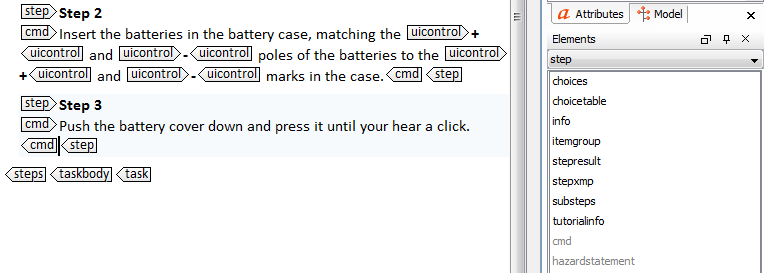

To insert an element
-
Place your cursor where you want to insert the element.
-
Do one of the following:
- Press Enter and select the correct element in the displayed list of elements.
 - Select the correct element in the Elements view.
 Tip: If the Elements view is not visible in the layout of your workspace, display it by choosing Window > Show view > Elements.
- Press Enter and select the correct element in the displayed list of elements.